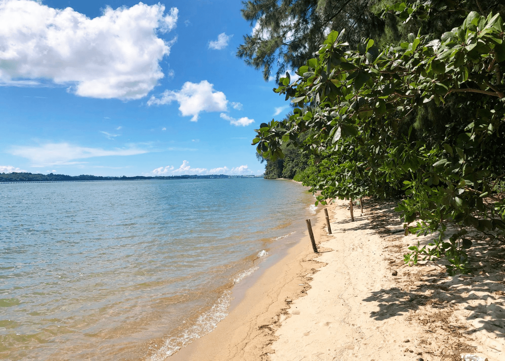
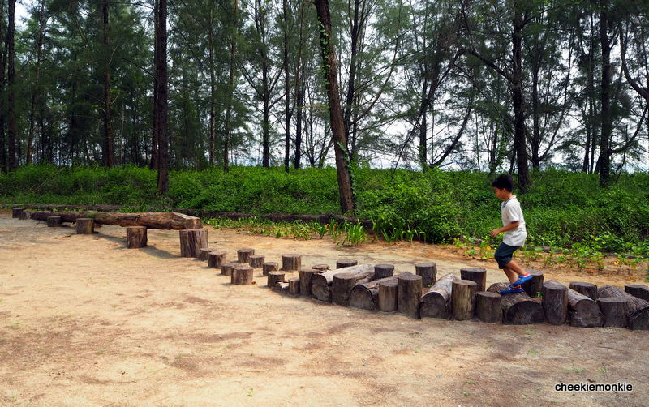
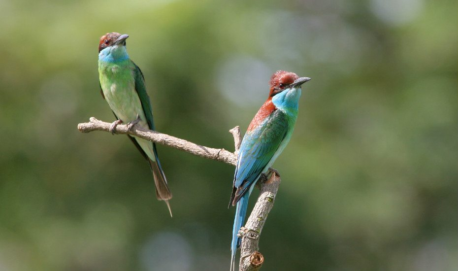

Coney Island is located off the coast of Singapore. It is a 133-hectare island found in between Pulau Ubin to its northeast and the mainland to its southwest. The rustic green space in the city’s North-East is home to hidden white sand beaches, flora and fauna. Its untouched trails stretch across mangroves, coastal forests, grasslands and casuarina woodlands.
From Punggol Interchange: Bus service 84 from Punggol Interchange.
Alight at the now-defunct Punggol Ranch and walk to the boardwalk at Punggol Beach that leads to the island. Stop by The Punggol Settlement where you can rent some bikes at Jomando Adventure & Recreations. Alternatively, you can enter from the other end of the island from Lorong Halus Wetlands.
Coney Island was originally known as Pulau Serangoon and covered just 13 hectares. In the 1930s, it was owned by the Aw Boon brothers of Tiger Balm and Haw Par Villa fame.
In the 1950s, it became acquired a businessman with dreams of creating Singapore’s own version of Coney Island. He constructed the island into a leisure resort called Singapore Coney Island. The resort had facilities including a dance hall, a restaurant and bar, as well as seaside accommodation. However, its profits were insufficient to continue development.
The government of Singapore acquired the island in the mid-1970s and started redevelopment efforts, including two rounds of land reclamation. As a result, the island now covers 133 hectares – more than ten times its original size – and is connected to the mainland by two bridges. The 50-hectare Coney Island Park was then opened to the public in October 2015.
Coney Island Park features five beach areas, where you can catch glimpses of the developing mangrove. However, do beware of sandflies!
Coney Island Beach
Walking through Coney Island's mangrove forest, you might see mudskippers and even water snakes. Remember to dismount from your bike if you're cycling to be considerate to other people trekking. Try to come after a rainy day, when the mangroves are filled and there's plenty more to see.
Coney Island Mangrove
This miniature obstacle course is constructed from the timber of uprooted casuarina trees and other recycled materials. Bring your kids and attempt to keep your balance across a wooden bridge, jump over stepping stones and race as you climb over log fences.
Casuarina Exploratory playground
Coney Island is home to many animals, not just in the mangrove. With butterflies and squirrels, and over 80 species of birds, there are many opportunities to snap pictures so that you remember your trip.
Blue throated bee-eater
{kind=link}